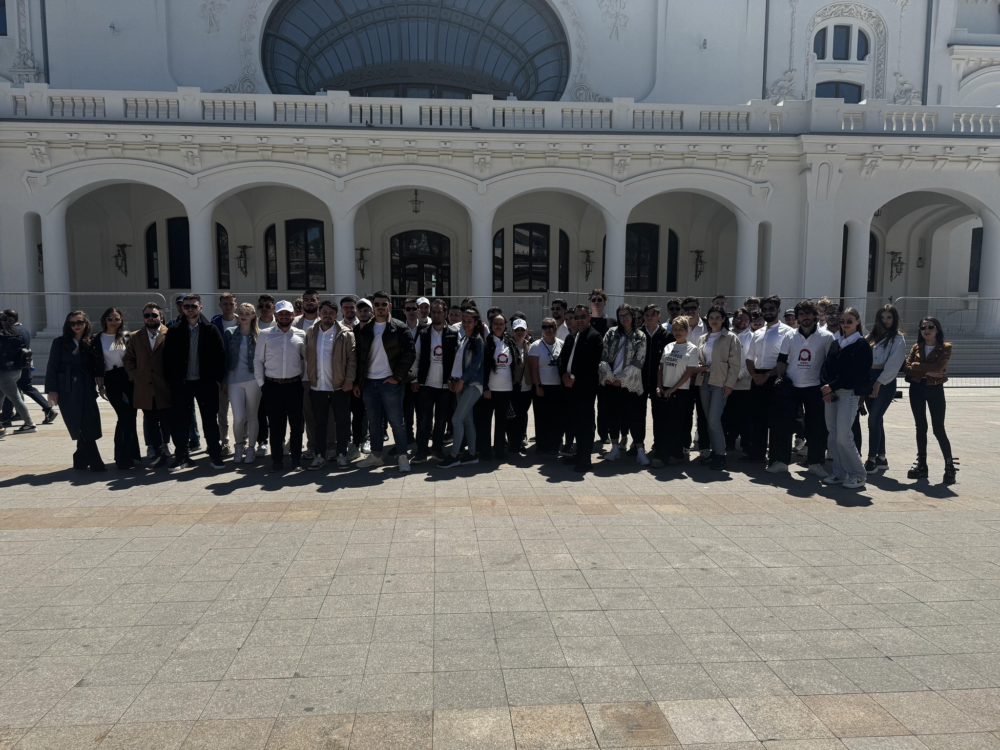
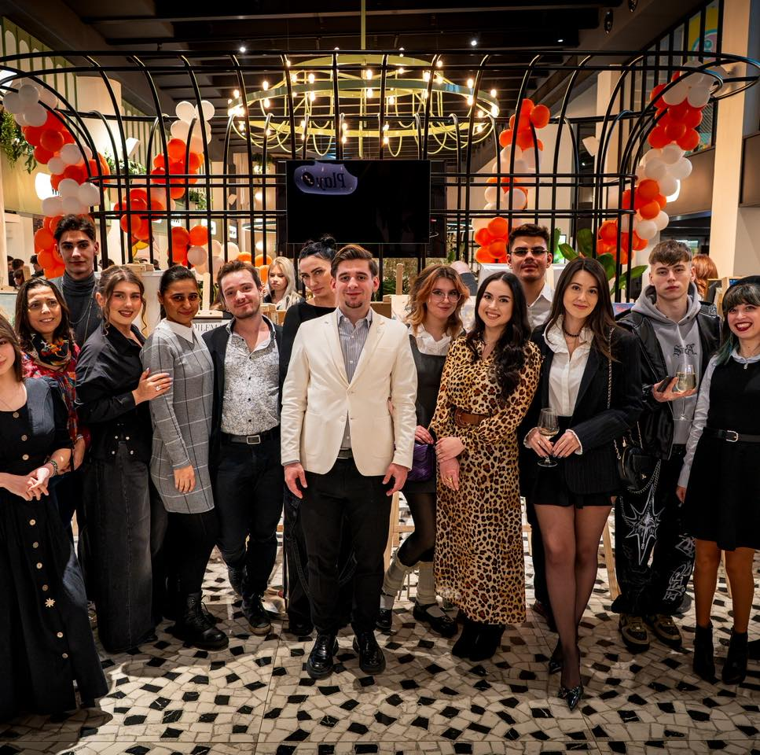
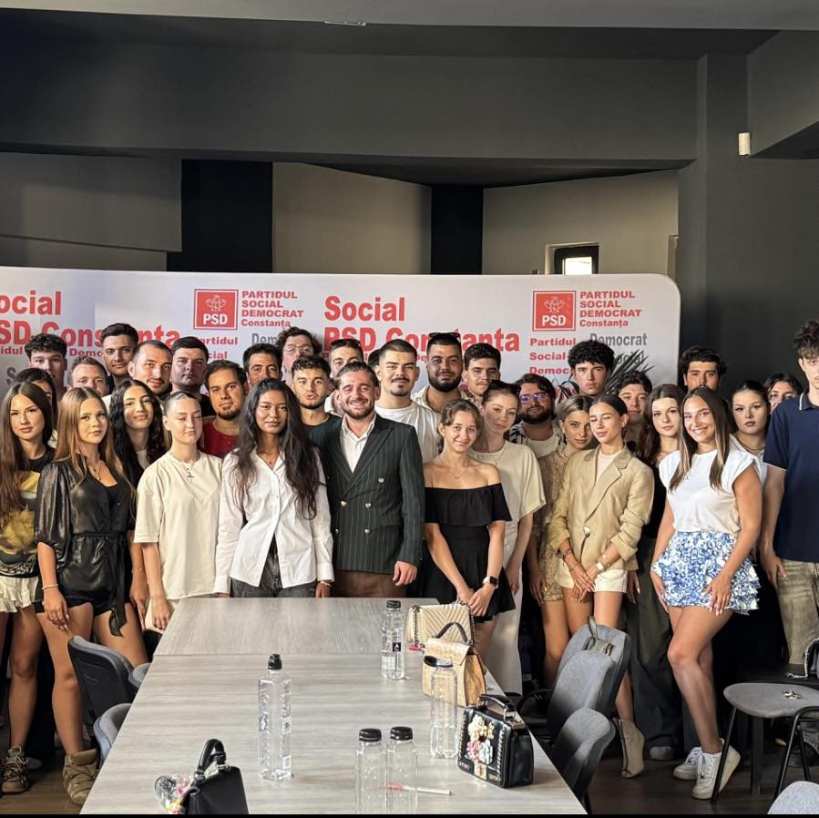

"O generatie, O directie. De la tineri, pentru tineri"
TSD Municipiul Constanța reprezintă organizația de tineret dedicată implicării active în comunitate.

Ne dorim să susținem tinerii din Constanța prin proiecte educaționale, sociale și civice.

Participăm la acțiuni de voluntariat, evenimente locale și inițiative dedicate dezvoltării comunității.
